Global Search¶
test-this text should be *Green*
In general search is sometimes referred to as seek, a search is a function or process of finding letters, words, files, web pages, or other data. Many operating systems,software programs, and websites contain a search or find feature to locate data.
When on the Internet, you use a search engine to search through web pages on the Internet. Providing a search function that searches your Web pages is a design strategy that offers users a way to find content, information.
Users can locate content by searching for specific words or phrases, without needing to understand or navigate through the structure of the Web site.
Navika application has a feature Search function, finds the Ships, IMO, Country of origin, End port. Where you can able to find the required information. Later in this chapter you will be able to use the search funtion.
Search function enables you to find a ship of interest based on ship name search or other like IMO, Country of origin. (even a partial shipname). More on ship of Interest kindly refer to Ships of Interest chapter.
The following is the process to search. You login to navika application in Adjusted Date and Time, ships are plotted and to understand the Global search In the Fig. 72 in the navika application
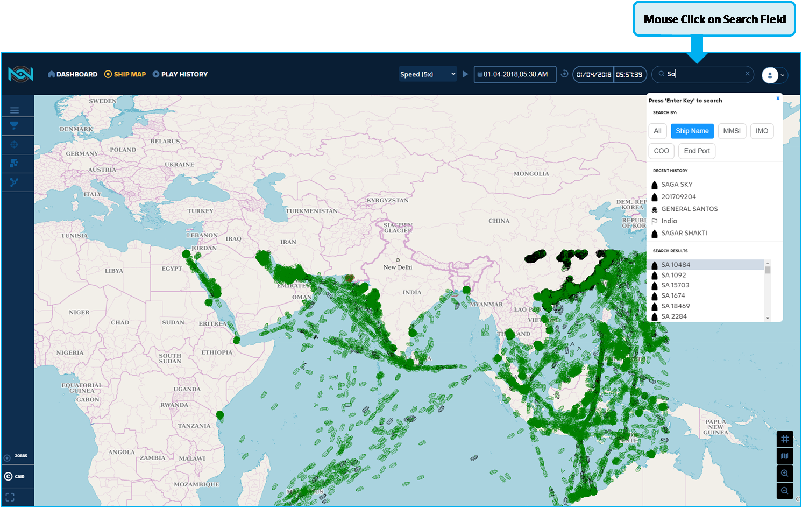Fig. 72 Global search Login¶
All, Ship name, MMSI, IMO, COO, End port. Each of the functions will be explained in this chapter.
In the Fig. 73 you can observe the we are logged in Adjusted date and time, but plot clock is paused.
You can Search following information, If you enter 3 to 4 characters or strings in the search field all the values containing the characters strings will be displayed in the search results.
In The Fig. 73
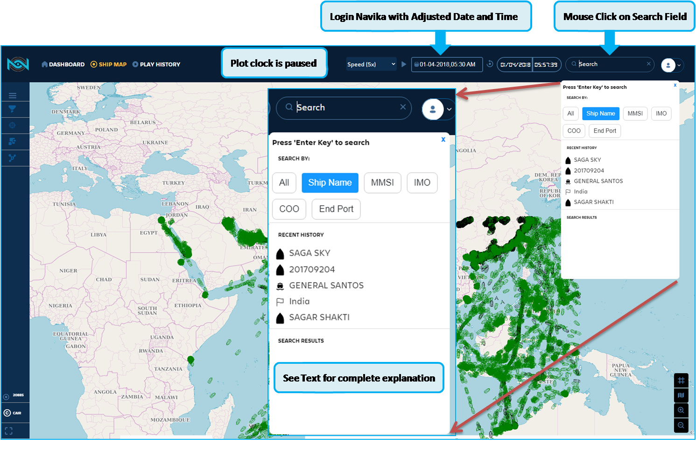Fig. 73 Menu Without Search Results¶
Search function to find out the required ship and identify on the Live map, If you are in Live map, that is Last known position is 30 minutes from the current date and time.
Since there is no data for the Live map, we are considering only the historical data. So we have logged in with Adjusted date and time.
In the Fig. 74 observe after typing the one or two characters. The Search menu contains the search Results in ascending oder for your convience.
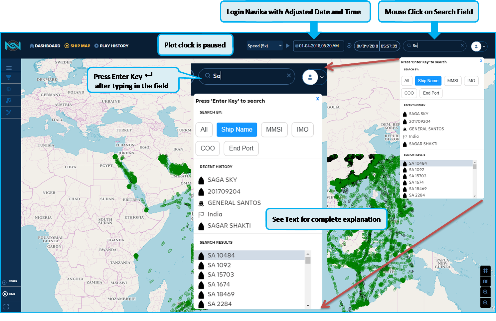Fig. 74 Global_Search With Results¶
Global search is important features in Navika application. You can search with known data, or mouse hover over the plotted MMSI and click on the ship icon to display the Pop-up menu.
In the Fig. 75 explains the details of the Search Menu.
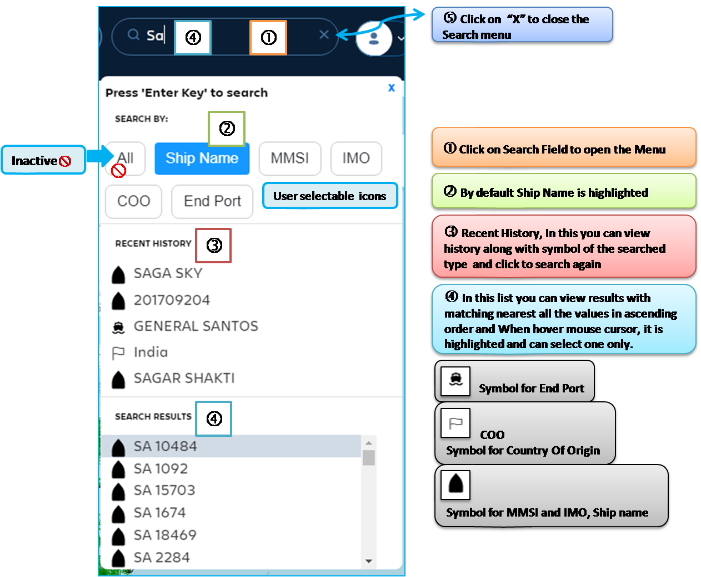Fig. 75 Global Search Menu Details¶
Search menu opens up and has Six search options:
ALL - Currently inactive
Ship Name - Name of the vessel
MMSI - As per AIS data
IMO - As per the AIS data
COO - As declared by vessel in AIS data
End Port - As declared by vessel in AIS data
The Search Menu details:
Click on the Search field using mouse cursor,
By default Ship Name is highlighted for the user to enter
Recent History - you can observe the list with symbol and select in this list by clicking.
Search Results - In this list you can view results with matching nearest all the values in ascending order and when you hover mouse cursor on the text, it is highlighted and can select one only.You can observe all the values containing Sa text, it is typed Sa in the searched field.
In the following section you will be learn how the search function is used. In this we are selecting the Country Of Origin - COO in the search menu.
In the Fig. 76 indicates you can select the search. By default it is Ship Name button is selected for search.
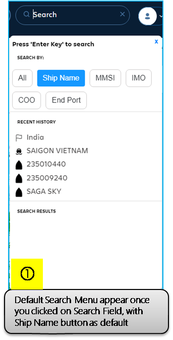Fig. 76 Global-Search-Menu-1-ii¶
In the Fig. 77 in the menu select COO - Country of Origin and type in the text as indicated in next figure.
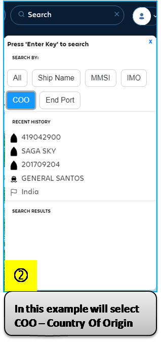Fig. 77 Global-Search-Menu-2¶
In the Fig. 78 type in the text, in this will type India as country of origin, after typing the text, make sure you press the Enter Key. Application will indicate results in the Searched Results searched
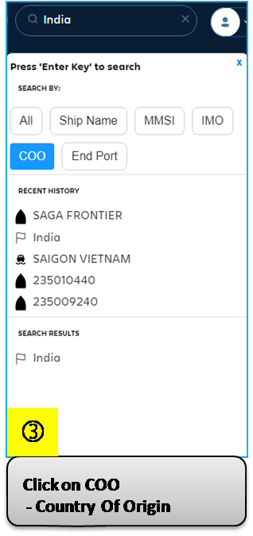Fig. 78 Global-Search-Menu-3¶
In the Fig. 79 In the searched Results, Hover the Mouse cursor over the results and click the text. The application will acknowledge the request and process to render the ships / Vessels belong to the country of origin selected.
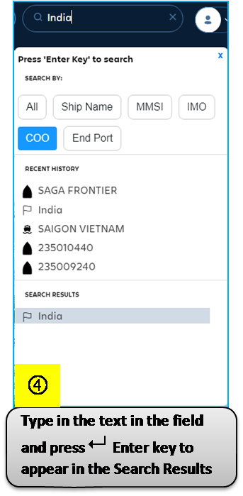Fig. 79 Global-Search-Menu-4¶
In the Fig. 80 indicates all the ships / vessels belong to India. Irrespective of the locations. It will be highlighted with Radiating concentric circles for the you to recognise the ships/vessels.
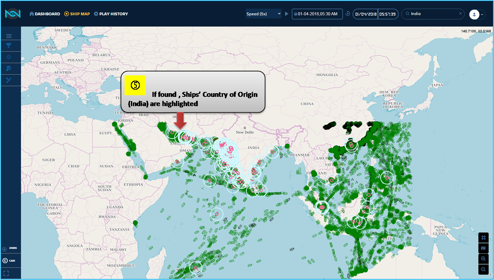Fig. 80 Global-Search-Menu-5¶
In the Fig. 81 When you hover the mouse cursor over the ship icon / vessels icon, a pop-up will indicate the ships Co-ordinates, Ship Name, MMSI and Date / Time Group for the current position. As we have set the Plot clock in Paused state. So there is no change in the position or location of the Ships /Vessels
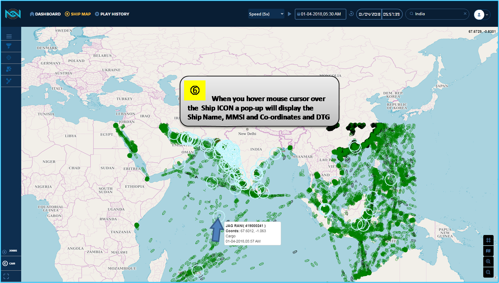Fig. 81 Global-Search-Menu-6-COO¶
When click the ship/vessel icon with left mouse key, a pop-up menu of the particular ship/vessels are displayed. as indicated in the Fig. 82
Note: There will be only one pop-up will be displayed.
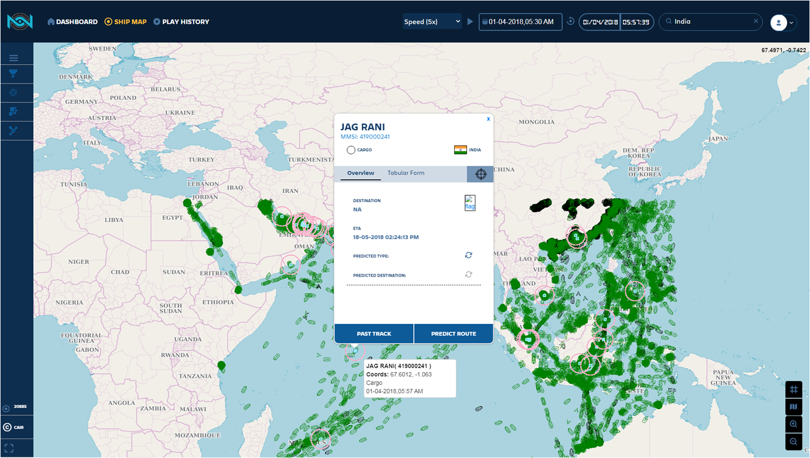Fig. 82 Global-Search-Pop-up-Menu¶
In this section will be explained about ship Pop-up menu.
First we will search the ship. how a ship or vessel is located. As indicated in the :numref: #`Global-Search-Pop-up-Menu-a1`, where you observe the searched field with MMSI of the ship is typed. The search function has indicated on the map located at time and date indicated in the Navigation Bar. When you hover the Mouse cursor over the searched ship, A tool tip is displayed the basic details of the ship with respect to the Date and time. see the Fig. 84
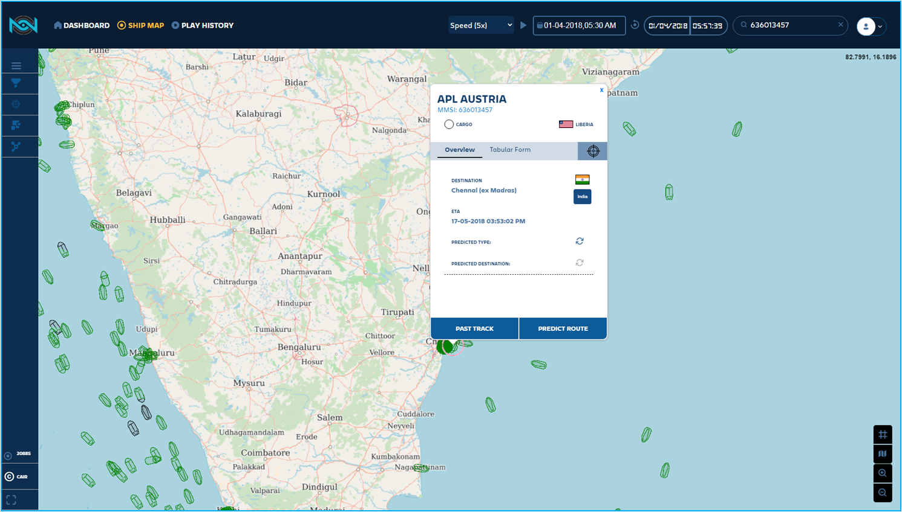Fig. 83 Global-Search-Pop-up on the Map¶
The figure indicate the Tool Tip, when you hover the mouse cursor and Left click over the ship icon, Pop-Menu is opened for you. In the Fig. 85
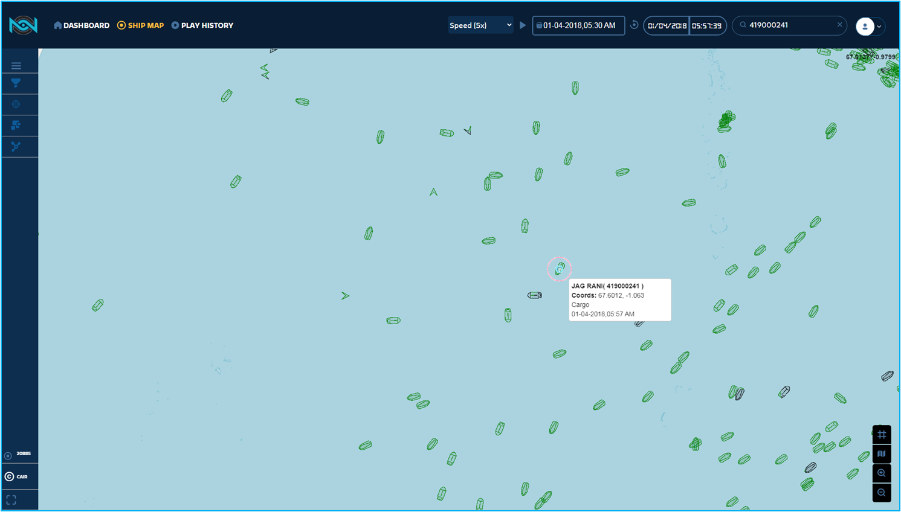Fig. 84 Global-Search-Pop-up-Menu Tool Tip¶
In the Fig. 85 opens menu after you have clicked over the flashing ship icon.
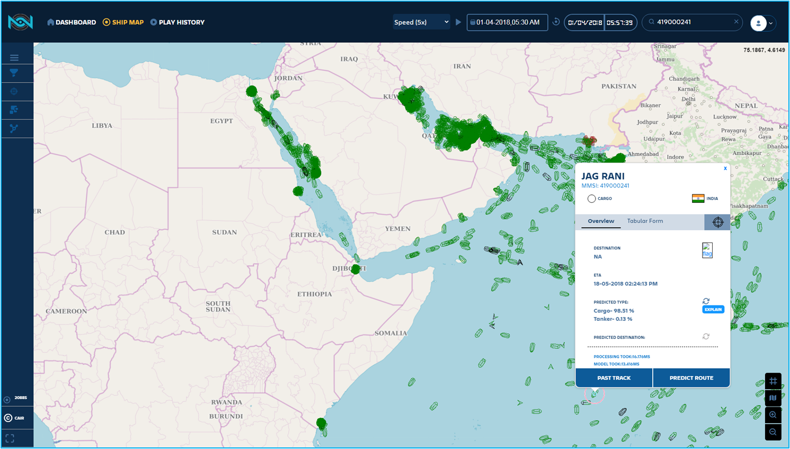Fig. 85 Pop up-Menu after Click over the Ship Icon¶
In the Fig. 86 indicate the Tabluar column, details of the ship you have selected. Including the Time Stamp at the particular instance. As we have paused the plot clock. So there is no movement of the ships / Vessels on the map. Ships are plotted are of historical AIS data.
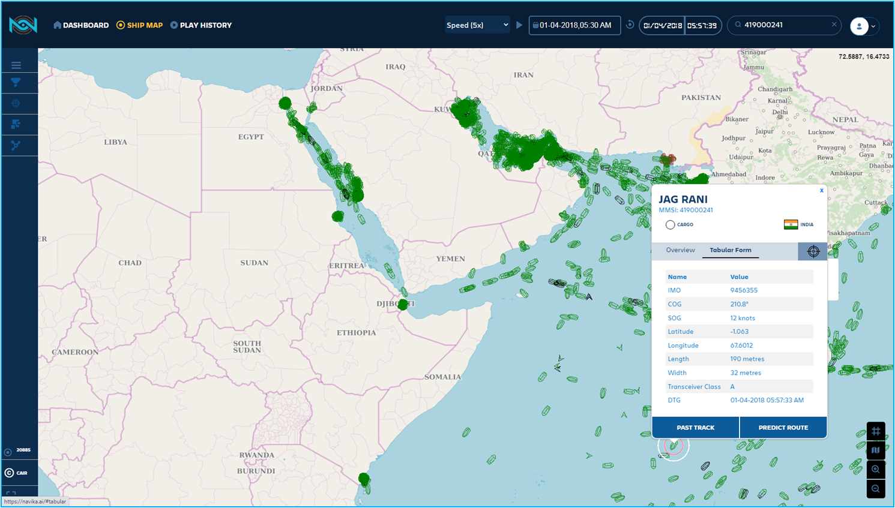Fig. 86 Pop-up Menu with Tabular Information¶
The following section will be explained on the details of the Pop-up menu. In the Fig. 87 you observed over the map for the particular ship searched. With overview column of the pop-up
Ship Name
Ship Category / Vessel category Declared as per the AIS Data
COO - Country of Origin
Crosshair - option for you to add the selected ships as your Ship of Interest or to a Group of Interest (This is explained in the Section SOI/GSOI)
Destination Port country flag
Destination Port where the ship has declared
ETA - Estimated Time of Arrival
Predicted Type - This is implemented using AI/ML
Predicted Type it can be checked by clicking the circled Arrow icon. Even the Explain button is under development. You can view the information in the next figure Fig. 88
Predicted Destination it can be checked by clicking circled arrow icon - This is under development.
Past Track - it is under development
Predict Route - it is under development
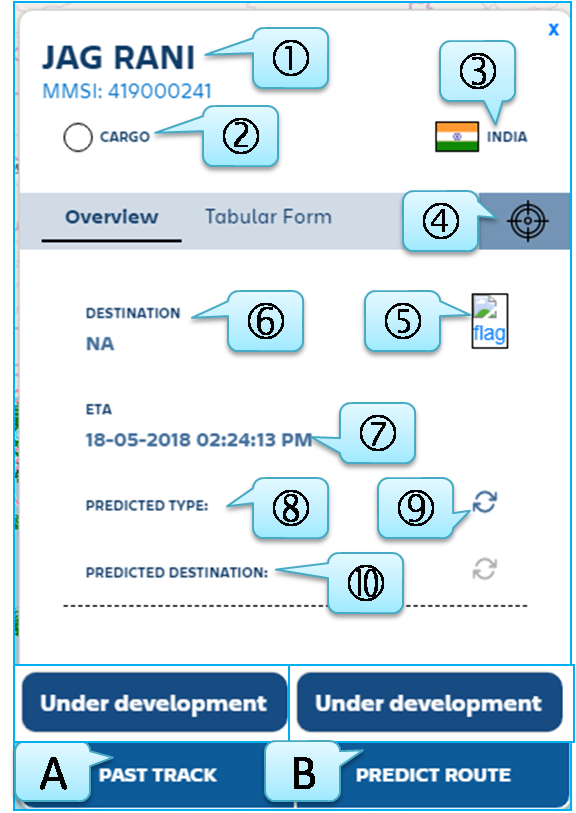Fig. 87 Pop-up-Menu with Overview Details¶
Click on the circled arrow icon for the prediction
Predicted Type - display the percentage of prediction, in this scenario Cargo - 98.51% and Tanker - 0.13%
Processing Time taken is 185.359ms and Model Time taken is 182.696ms.
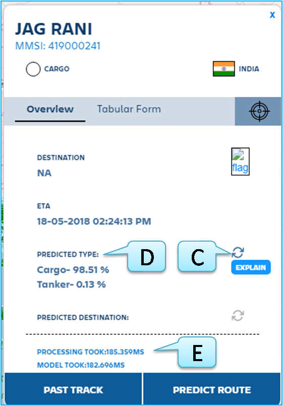Fig. 88 Pop-up-Menu with Predict type¶
In the following section will learn more on the Pop-up menu of Tabular Form column.
In the Fig. 89 indicate the pop-up menu with tabular form.
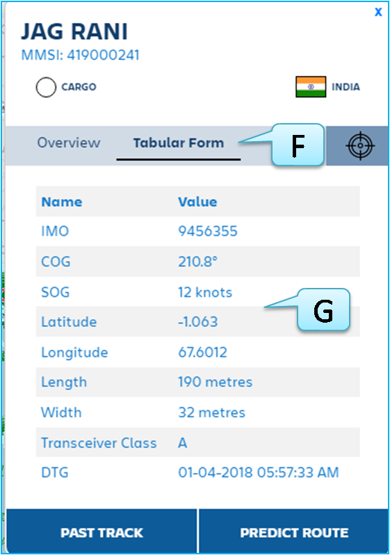Fig. 89 Pop-up-Menu with Tabular Form information¶
Tabular Form, table contains the Ship/vessel position details
Position of the ship details.
the following details are displayed in the - Tabular form Menu:
IMO = International Maritime Organisation
COG = Course Over the Ground – Degrees
SOG = Speed Over the Ground – Nautical miles per hour
Latitude = Position in Degrees
Longitude = Position in Degrees
Length = Vessel Length in Meters
Width = Vessel Width in Meters
Transceiver Class = A, B, C based on the AIS data received and type of vessel
DTG – Date and Time group = DD/MM/YYYY HH:MM:SS
In the Fig. 90 indicate the destination port name and Destination country flag declared by the ship through AIS data. In this pop-up menu the ship is selected from the country Liberia.
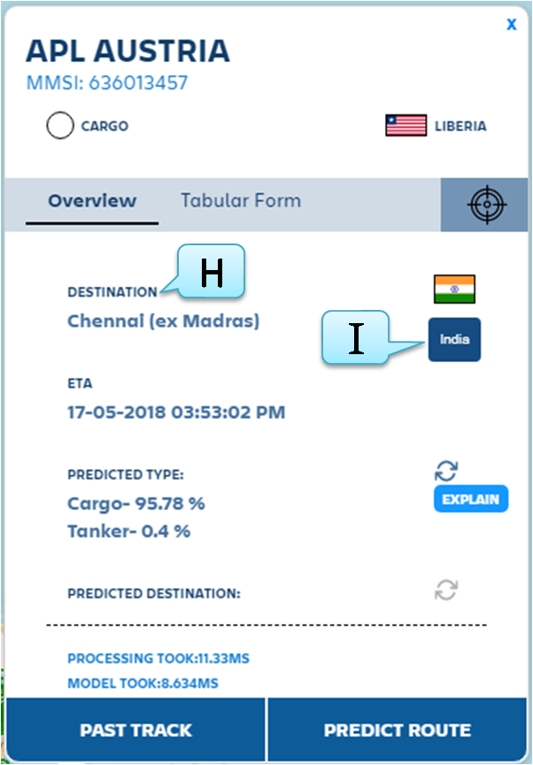Fig. 90 Pop-up-Menu with Destination¶
Destination = Where the ship has declared as per the AIS information.
Destination country Flag If you click on the flag icon, it will display the country name. Since you will not be able to identify the country by Destination provided in the Fig. 90
By this your are familiar with Global Search funtion. In the next section Ships of Interest will explain on how Global search function supports to you to select the particular ships and list of ships for analysis. That is Crosshair part will be covered,
If you have set adjusted date and time then you will able view the MMSI / Ships Last known position 30 minutes from the time if you have set the Adjusted clock, vice versa, plot clock will be set.
When you click on the predict the type, it will take time to process. After that it will display type is declared type or changed one, it will display the category type. Declared type is available in the AIS database. This prediction function is calculated and analysed in the backend in the server database. In the :numref: # Over_view_pop-up display the details of the MMSI apart from the category.
For abbreviation list, kindly refer acronyms chapter in this document
This information can be viewed for the selected MMSI, you can also click MMSI icon on the plotted and check randomly.
One more option is to view the MMSI and Latitude / Longitude by hovering the mouse cursor over the MMSI icon.
This data is displayed based on the AIS data received by the server systems.
In the Pop-menu, in the Fig. 91 you can click on the crosshair icon to add the MMSI to your Interest – Ship of Interest – SOI, or by create Group of Interest GOI.
Further on this is been explained in-detail in the SOI / GOI chapter.
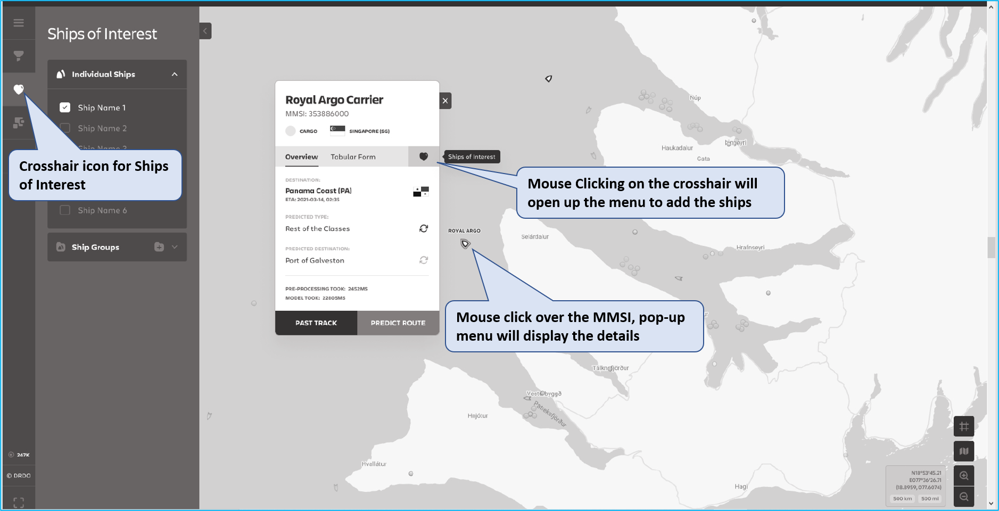Fig. 91 Over view pop-up crosshair¶